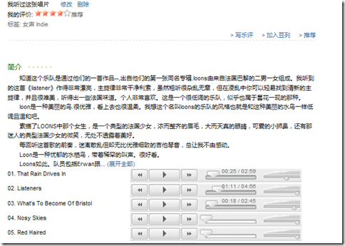
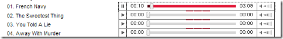
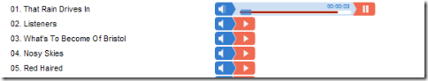
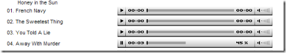

在豆瓣上乱逛是一件很滋润的事，我特喜欢看那些专辑下面其他人的评论，碰上有意思的就会很自觉地重新从硬盘里翻出这些歌来听(豆瓣的试听太少了)，虽然Foobar的搜索功能很好用，不过像我等懒人还是觉得不爽。所以我一直要这样的功能，那就是在豆瓣页面上嵌入一个网页播放器，不过播放的内容是本地硬盘的MP3。
很早之前我就想过用Python+GAE做个网页版的MP3管理系统，类似于这个：eBook Viewer – 用豆瓣 + Gears 管理本地电子书。不过肯定不能手动添加内容了，原先想的是先将本地的MP3编成索引库，然后利用歌曲的id3 Tag就能完成本地文件和豆瓣上专辑的对应了。
后来着手做时才发现此法不可行：
一是编索引数据库太不太现实，我硬盘中曲库有160G(硬盘没坏之前是200+),按我这三脚猫的编程水平要做个高效的索引程序出来貌似很困难。
二是这样达不到我的需求，照我这样下去就等于自己再造个轮子了，有点主次不分的感觉。我想要的只是实现豆瓣专辑和本地歌曲的关联，相当于扩展一下豆瓣的试听功能，在浏览豆瓣页面的时候能方便的播放本机的音乐，其主体还是豆瓣。
就这样,此念头就不了了之了。
前天突然想到其实我可以利用Everything来做做文章。Everything作为一个超快的硬盘搜索工具，完全可以解决我索引的问题。同时它还有强大的HTTP服务器，与everything的交互也很好解决，只要利用http://192.168.110.79:801/?s=检索内容就可以很方便的搜索出文件。
刚好最近是我折腾的高峰期，就用GreaseMonkey实现了一下。使用方法类似我刚写的MediaWiki浮动目录脚本，在豆瓣页面上按m切换MP3播放器的显示。
还提供多种样式的选择：依照UserScript上的那一堆Inline Mp3 Player改的。
使用方法：下载一个Everything，装上我写的这个脚本（下载请见:userscripts地址），最后打开Everything的Http服务器就OK了。
注意：代码里用的是Everything的默认端口801，需要更改的请手动修改脚本。默认用的是Google的播放器，要想换成其他样式，也得手动修改脚本。
还有，我这个插件是根据文件夹名来搜索的。有个要求：音乐分文件夹存放，一个专辑一个文件夹，文件夹名里要包含专辑名称，反正我的是（年份）专辑名。
有图有真相,大图请去我的Picasa相册：
Google 版播放器

WNYC 版播放器

WordPress 版播放器

Consilium Version

哈哈，满足鸟。
可惜还是有一大版不足：
1.现在的Flash播放器均不支持无损。唉，我硬盘里还有那么多APE、FLAC、WV。。。。
2.MP3播放器无法实现后台播放，一隐藏就停止播放了。
3.无法更新MP3的播放次数。
没办法了，依我现在的水平解决不了这些问题。
扯点题外话，我管理歌曲靠的是foobar强大的tag功能，除了流派/歌手/专辑等常见tag外，我还加了PLAY_COUNTER和RATING。我自定义了几个快捷键，比如Ctrl+5便是为当前播放歌曲打五星，Ctrl+3打三星，Ctrl+1打一星(呵呵，这个就没用了，低于三星的直接我就把整张专辑删除)。
再加上foobar的专辑列表又可以自定义按某一标签来排序。。。hoho,太完美了。
PS:有点标题党了，不过不暂时还找不到好名字， 标题党就标题党吧。。。